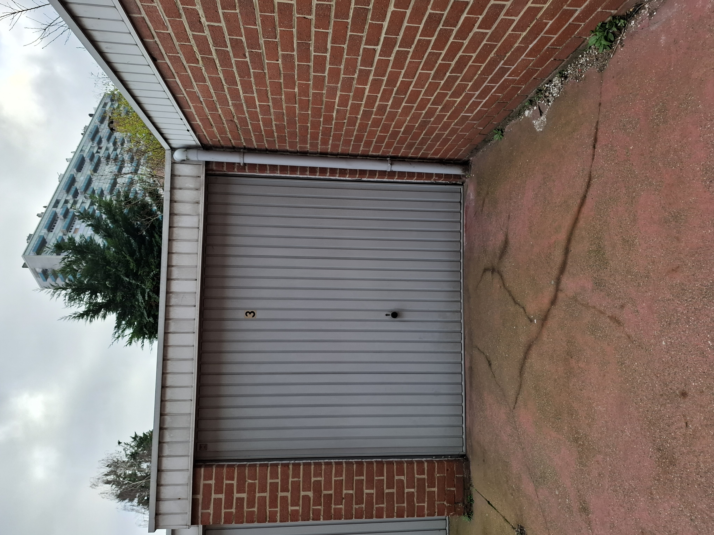
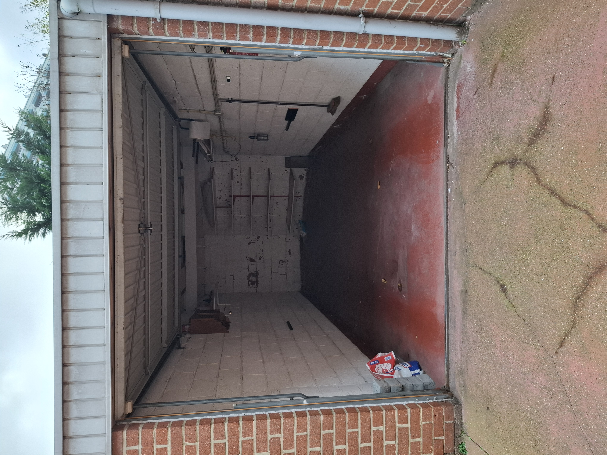
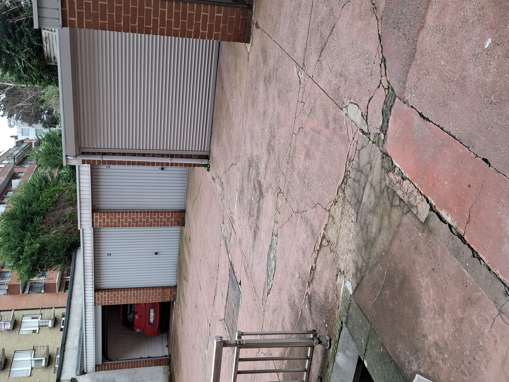
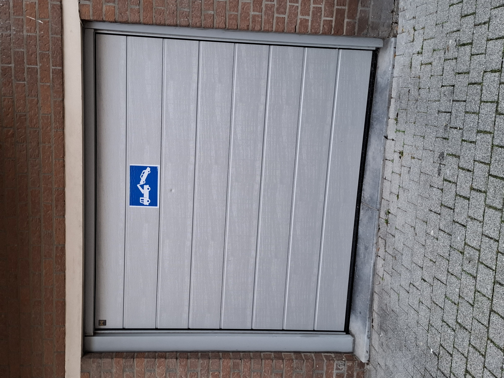
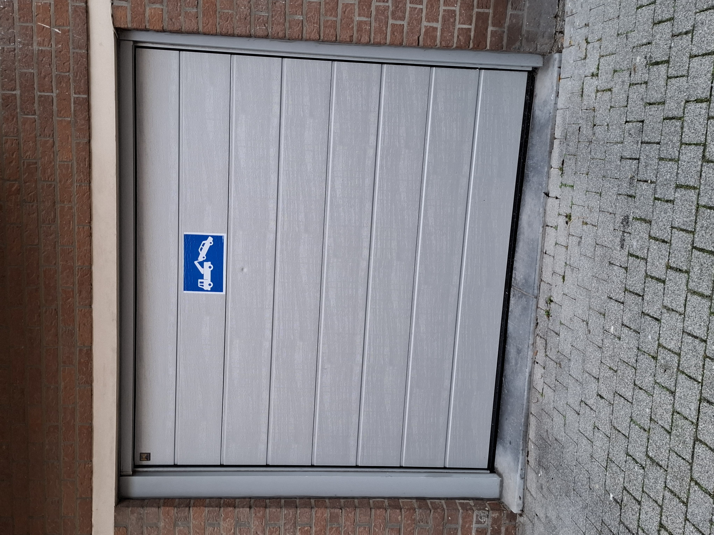

Description
Garage fermé situé dans une cour privée, accessible via une porte automatique. Idéal pour garer une voiture, une moto ou pour du stockage sécurisé.
Caractéristiques
- Adresse : Rue du Korenbeek 110, 1080 Molenbeek‑Saint‑Jean
- Accès : porte automatique + garage individuel verrouillable
- État : sol béton, murs peints
- Dimensions : en cours de mesure
- Électricité : non incluse (possible via compteur de passage, à charge du locataire)
- Disponibilité : immédiate
Règles
- Pas de produits dangereux
- Pas d’activité professionnelle
- Stockage sous la responsabilité du locataire
- Pas de mécanique ni d’activité bruyante
Prix
150 € / mois
Poser sa candidaturePhotos du garage
   
